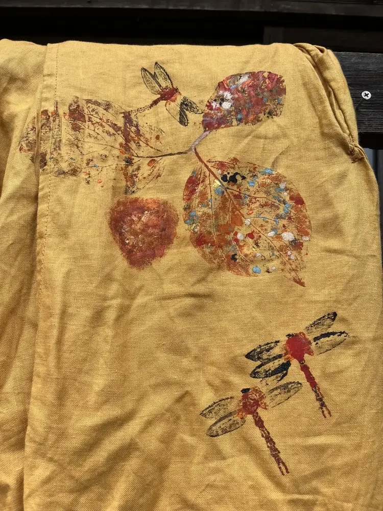
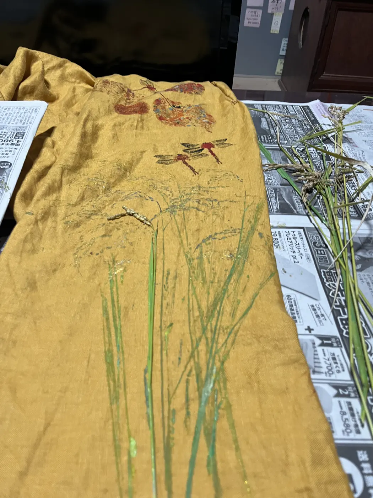
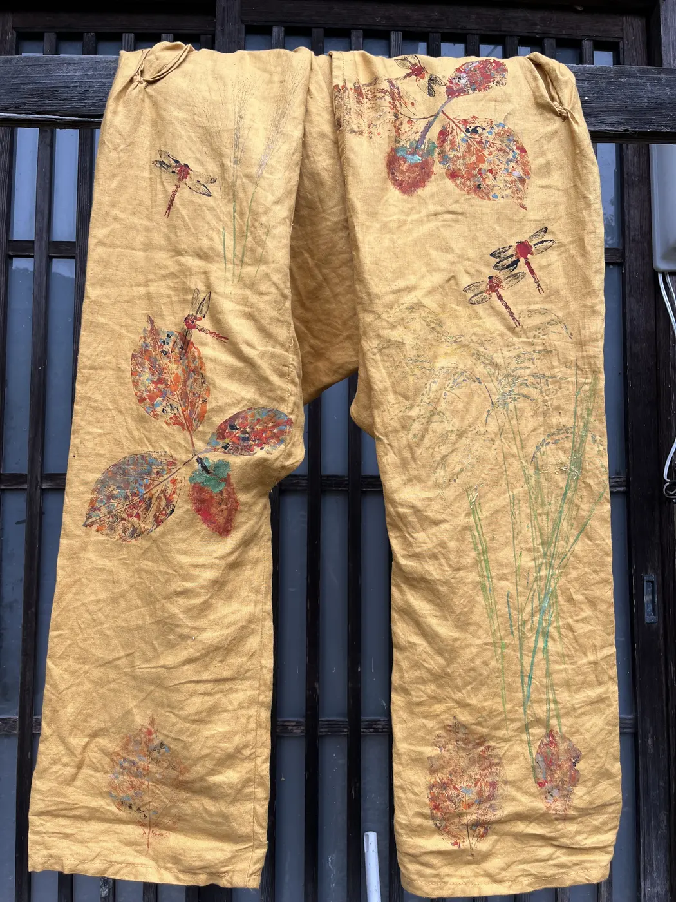
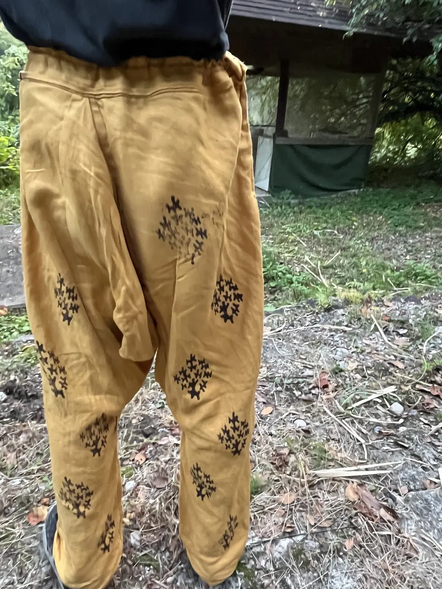

茶碗蒸しパンツ
長方形二枚と正方形一枚を中心に、直線裁断で仕立てたラミーのサルエルパンツです。小院瀬見の秋の形を前後へ押しました。
- Year
- 2025年
- Place
- 小院瀬見
- Materials / Method
- ラミー、スタンプ
What I tried
布を無駄なく使う直線裁断を基本とし、身体へのアクセスが必要なポケットだけを曲線で切りました。前面には柿、赤蜻蛉、稲、ススキ、背面には朽木型のスタンプを配置しています。展示物ではなく、歩き、座るなかで形が決まる衣服として制作しました。



